Running your shop with MauzoHalisi
Kuendesha duka lako na MauzoHalisi
Everything in this manual is a task you would actually do in a day of trading, written in the order you would meet it. Find the thing you are trying to do, follow the numbered steps, and the words in this style are exactly what you will see on the screen.
Kila kitu katika mwongozo huu ni kazi halisi unayofanya siku ya biashara, kimepangwa kwa mtiririko utakaokutana nao. Tafuta unachotaka kufanya, fuata hatua zilizopangwa kwa namba, na maneno yaliyo katika mtindo huu ndiyo hasa utakayoyaona kwenye skrini.
Read all of it, especially setup, reports and subscription.
Soma yote, hasa usanidi, ripoti na usajili.
Sections 5 and 6 are your whole day.
Sehemu ya 5 na 6 ndiyo kazi yako ya siku nzima.
Sections 4 and 7.
Sehemu ya 4 na 7.
01
Before you start
Kabla ya kuanza
MauzoHalisi runs in a web browser. There is nothing to install, and the same account works on a phone, a tablet and a computer at the same time.
MauzoHalisi inafanya kazi ndani ya kivinjari (browser). Hakuna cha kusakinisha, na akaunti moja inafanya kazi kwenye simu, tableti na kompyuta kwa wakati mmoja.
What you need
Unachohitaji
- A phone number that can receive SMS. Your code, your password reset and your reports all go to this number.
- Namba ya simu inayopokea SMS. Msimbo wako, kurudisha nenosiri na ripoti zako vyote vinakuja kwenye namba hii.
- An email address and a password of at least 8 characters.
- Anwani ya barua pepe na nenosiri lenye angalau herufi 8.
- Internet. A weak connection is fine; the app is built for it.
- Intaneti. Mtandao hafifu unatosha; programu imejengwa kwa ajili hiyo.
Switch the whole app between English and Kiswahili from the language control in the sidebar. This manual has the same switch at the top of the page.
Badilisha programu nzima kati ya Kiingereza na Kiswahili kupitia kidhibiti cha lugha kwenye utepe wa pembeni. Mwongozo huu una kibadilishaji hicho hicho juu ya ukurasa.
02
Open your account
Fungua akaunti yako
You get a free trial when you register. Confirming your phone number is required before you can go any further, because that is how we reach you about payments and how you get back in if you forget your password.
Unapata majaribio ya bure unaposajili. Kuthibitisha namba ya simu ni lazima kabla ya kuendelea, kwa sababu ndiyo njia tunayokufikia kuhusu malipo na ndiyo njia ya kurudi ndani ukisahau nenosiri.
-
Open the site and choose Create one under the sign-in form.
Fungua tovuti kisha chagua Create one chini ya fomu ya kuingia.
-
Fill in Business / Legal Name, Full Name, your email, your phone number and a password, then confirm the password.
Jaza Business / Legal Name, Full Name, barua pepe yako, namba ya simu na nenosiri, kisha thibitisha nenosiri.
-
A code arrives by SMS. Type it in and press Verify.
Msimbo utafika kwa SMS. Uandike kisha bonyeza Verify.
-
The code did not arrive? Wait, then use Send a new code. You can ask a few times only, so that the SMS is not wasted.
Msimbo haukufika? Subiri, kisha tumia Send a new code. Unaweza kuomba mara chache tu, ili SMS zisipotee bure.
-
Once verified you land on the setup wizard. Go to section 3.
Ukishathibitisha utafika kwenye hatua za usanidi. Nenda sehemu ya 3.
Use a number you keep. Changing it later means verifying the new one again before reports and password resets follow you to it.
Tumia namba utakayoitunza. Ukibadilisha baadaye itabidi uthibitishe mpya kabla ripoti na urejeshaji wa nenosiri havijahamia huko.
03
Set up your shop
Sanidi duka lako
The business type you choose here changes what the rest of the app shows you. A pharmacy gets prescriptions, a restaurant gets a kitchen display, a guesthouse gets rooms. Choose the one closest to what you actually sell.
Aina ya biashara unayochagua hapa inabadilisha kila kitu programu inachokuonyesha. Duka la dawa linapata maagizo ya daktari, mgahawa unapata onyesho la jikoni, nyumba ya wageni inapata vyumba. Chagua inayolingana na unachouza kweli.
-
Pick your business type, then your trading name, city and currency.
Chagua aina ya biashara, kisha jina la biashara, mji na sarafu.
-
Open Business Settings and add your TIN and VRN if you are registered for them. They print on receipts and invoices.
Fungua Business Settings kisha ongeza TIN na VRN kama umesajiliwa. Hivi hupigwa chapa kwenye risiti na ankara.
-
In Shop Settings, upload your logo and set the shop phone number. Reports go to this number when you have not set another one.
Ndani ya Shop Settings, pakia nembo yako na weka namba ya simu ya duka. Ripoti huenda kwenye namba hii usipoweka nyingine.
-
If you charge VAT, add the rate under Tax Rules.
Kama unatoza VAT, ongeza kiwango chini ya Tax Rules.
04
Put in your products and opening stock
Weka bidhaa zako na hisa ya kuanzia
Nothing else works until this is done, because profit is selling price minus cost price. If you leave the cost blank, the app can tell you your sales but not your profit.
Hakuna kinachofanya kazi kabla ya hapa, kwa sababu faida ni bei ya kuuza ukitoa bei ya kununua. Ukiacha gharama wazi, programu itakuambia mauzo yako lakini si faida yako.
-
Go to Products (Inventory › Products) and press Add Product.
Nenda Products (Hifadhi › Bidhaa) kisha bonyeza Add Product.
-
Fill in the Name, the Selling Price, the Cost Price and the Initial Stock.
Jaza Name, Selling Price, Cost Price na Initial Stock.
-
Set a Reorder Point. When stock falls to it, the item shows as Low stock and appears on your dashboard alert.
Weka Reorder Point. Hisa ikifika hapo, bidhaa itaonekana kama Low stock na itatokea kwenye tahadhari ya dashibodi.
-
Have many products already in a list? Use Download Template, fill the file in, then Import CSV. It is far faster than typing them one by one.
Una bidhaa nyingi tayari kwenye orodha? Tumia Download Template, jaza faili, kisha Import CSV. Ni haraka kuliko kuandika moja moja.
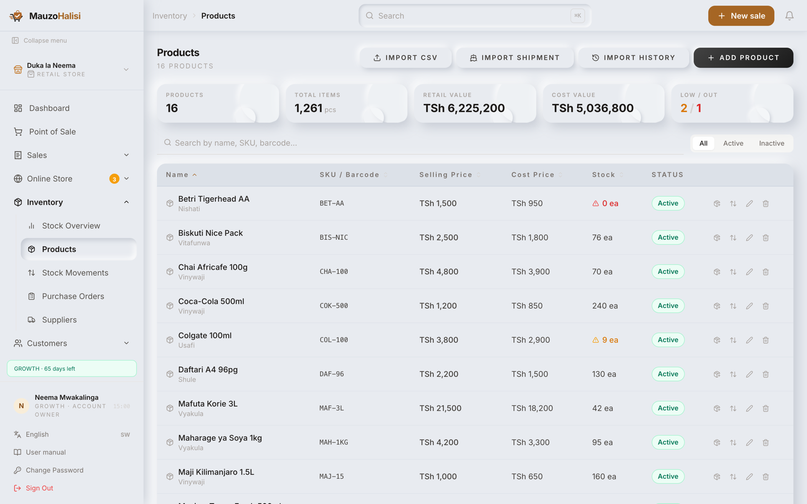
Put the barcode in the SKU / Barcode field. A scanner at the till then finds the item instantly.
Weka baakodi kwenye sehemu ya SKU / Barcode. Skana kwenye kaunta itapata bidhaa papo hapo.
05
Make a sale
Fanya mauzo
This is the screen your cashier lives on. Open Point of Sale from the sidebar.
Hii ndiyo skrini mhudumu wako anayoishi nayo. Fungua Point of Sale kutoka utepe wa pembeni.
-
Find the item: type in Search products or scan barcode… or scan it. Click the product to put it in the cart.
Tafuta bidhaa: andika kwenye Search products or scan barcode… au skani. Bonyeza bidhaa ili iingie kwenye kikapu.
-
Change the Qty if the customer is taking more than one, and put a percentage in Disc % if you are giving a discount.
Badilisha Qty kama mteja anachukua zaidi ya kimoja, na weka asilimia kwenye Disc % kama unatoa punguzo.
-
Attach a customer if you want the sale on their record: Search customer…, or New Customer. Leave it as Walk-in otherwise.
Ambatanisha mteja kama unataka mauzo yaingie kwenye rekodi yake: Search customer…, au New Customer. La sivyo acha kama Walk-in.
-
Choose how they are paying.
Chagua namna anavyolipa.
-
Press Charge, then Print Receipt, then New Sale for the next customer.
Bonyeza Charge, kisha Print Receipt, kisha New Sale kwa mteja anayefuata.
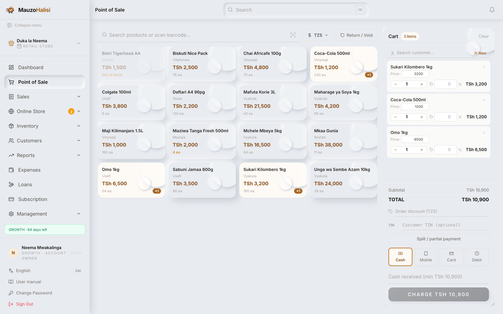
The four ways to take payment
Njia nne za kupokea malipo
| On screen | Kwenye skrini | Use it when | Itumie lini | What to fill | Cha kujaza |
|---|---|---|---|---|---|
| Cash | Notes and coins. | Fedha taslimu. | Type Cash Received; the app works out the Change. | Andika Cash Received; programu itahesabu Change. | |
| Mobile | M-Pesa, Tigo Pesa, Airtel Money, Halopesa. | M-Pesa, Tigo Pesa, Airtel Money, Halopesa. | Pick the Provider and paste the M-Pesa / Airtel Ref. | Chagua Provider kisha weka M-Pesa / Airtel Ref. | |
| Card | The customer paid on your card machine. | Mteja amelipa kwa mashine ya kadi. | Nothing extra. | Hakuna cha ziada. | |
| Debit | They are taking the goods and paying later. | Anachukua bidhaa na atalipa baadaye. | A customer is required. The amount appears under Debts. | Mteja ni lazima. Kiasi kitaonekana chini ya Debts. |
Never record a debt as cash to make the till balance. The money is then missing from your records and your profit figure is wrong.
Usiandike deni kama fedha taslimu ili kuleta usawa wa kaunta. Fedha itapotea kwenye kumbukumbu zako na faida yako itakuwa si sahihi.
06
Debts, returns and mistakes
Madeni, marejesho na makosa
Collecting a debt
Kukusanya deni
-
Open Debts. Every unpaid sale is listed with the customer, the amount and the receipt number.
Fungua Debts. Kila mauzo yasiyolipwa yameorodheshwa na mteja, kiasi na namba ya risiti.
-
When they pay, press Collect on their row.
Akilipa, bonyeza Collect kwenye mstari wake.
Cancelling a sale that was wrong
Kufuta mauzo yaliyokosewa
-
Open Return / Void and put the receipt number in Search receipt number….
Fungua Return / Void kisha weka namba ya risiti kwenye Search receipt number….
-
Write why in Reason for void, then press Confirm Void. The stock goes back on the shelf automatically.
Andika sababu kwenye Reason for void, kisha bonyeza Confirm Void. Hisa itarudi rafuni yenyewe.
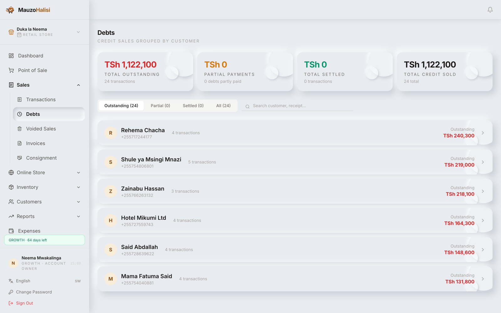
Every void is kept with the name of the person who did it, on the Voided Sales page. Reading that page once a week is the simplest check an owner has against theft.
Kila ufutaji huhifadhiwa pamoja na jina la aliyefanya, kwenye ukurasa wa Voided Sales. Kusoma ukurasa huo mara moja kwa wiki ndiyo ukaguzi rahisi kabisa alionao mmiliki dhidi ya wizi.
07
Keeping stock right
Kutunza hisa sawasawa
Selling reduces stock on its own. You only touch stock by hand when goods arrive, break, expire or go missing.
Kuuza kunapunguza hisa kwenyewe. Unagusa hisa kwa mkono pale tu bidhaa zinapoingia, kuvunjika, kuisha muda au kupotea.
-
New delivery: on Products, use Adjust Stock, choose Add Stock, type the quantity and write the reason, for example the supplier and the invoice number.
Mzigo mpya: kwenye Products, tumia Adjust Stock, chagua Add Stock, andika idadi na sababu, mfano muuzaji na namba ya ankara.
-
Damaged or expired: the same place, but Remove Stock.
Imeharibika au imeisha muda: sehemu ile ile, lakini Remove Stock.
-
To see who changed what and when, open Stock Movements. Every line carries the date, the type, the quantity and the user.
Kuona nani alibadilisha nini na lini, fungua Stock Movements. Kila mstari una tarehe, aina, idadi na mtumiaji.
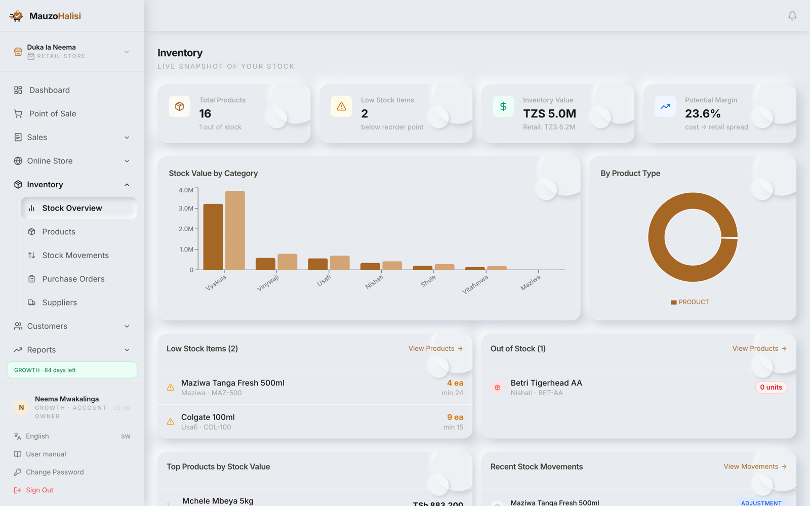
The numbers on the Inventory page
Namba zilizo kwenye ukurasa wa Hifadhi
| Figure | Kipimo | What it is telling you | Kinachokuambia |
|---|---|---|---|
| Low Stock Items | Items at or under their reorder point. Order these today. | Bidhaa zilizofika au kupungua chini ya kiwango cha kuagiza. Agiza leo. | |
| Out of Stock | Items at zero. Every one of these is a customer you turned away. | Bidhaa zilizoisha kabisa. Kila moja ni mteja uliyemrudisha mikono mitupu. | |
| Inventory Value | The money sitting on your shelves, at cost price. Cash you cannot spend. | Fedha iliyolala rafuni yako, kwa bei ya kununua. Fedha usiyoweza kuitumia. |
08
Record what you spend
Andika unachotumia
Sales minus the cost of the goods is gross profit. Gross profit minus your expenses is what you actually keep. If you do not enter rent, electricity, wages and transport, every profit figure in the app will flatter you.
Mauzo ukitoa gharama ya bidhaa ni faida ghafi. Faida ghafi ukitoa matumizi yako ndiyo unachobaki nacho kweli. Usipoingiza kodi ya pango, umeme, mishahara na usafiri, kila kipimo cha faida kwenye programu kitakudanganya.
-
Open Expenses and add the amount, the category and the date it was incurred.
Fungua Expenses kisha ongeza kiasi, kundi na tarehe iliyotumika.
-
Enter it on the day it happened, not the day you remember it. The calendar and the reports read the date you type.
Iingize siku iliyotokea, si siku unayoikumbuka. Kalenda na ripoti husoma tarehe unayoandika.
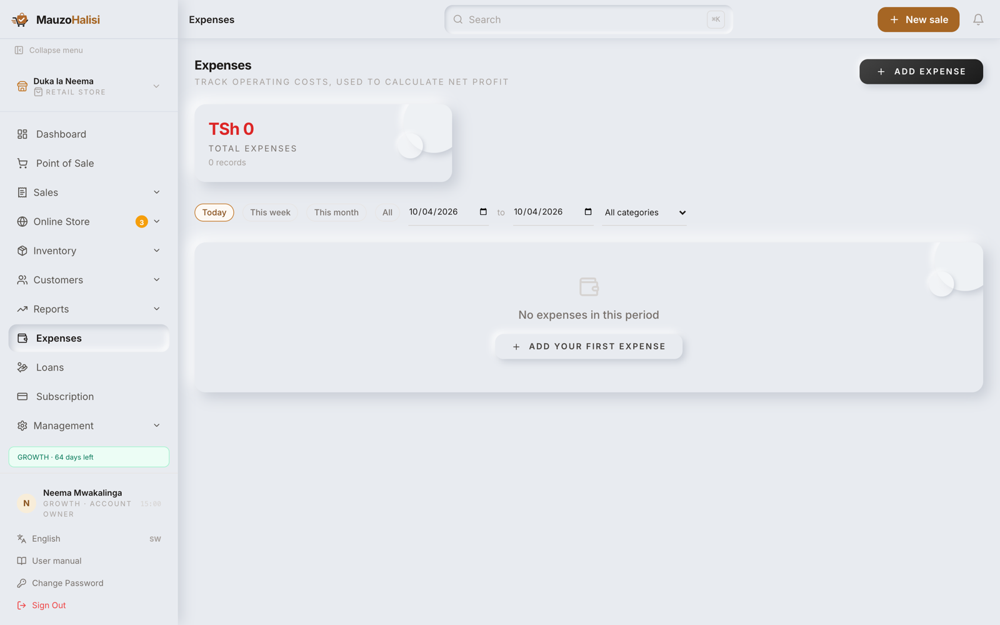
09
Reading your business
Kusoma biashara yako
The dashboard
Dashibodi
Today at a glance: sales, profit, receipts, what is running low. Open it first each morning.
Leo kwa mtazamo mmoja: mauzo, faida, risiti, kinachokaribia kuisha. Ifungue kwanza kila asubuhi.
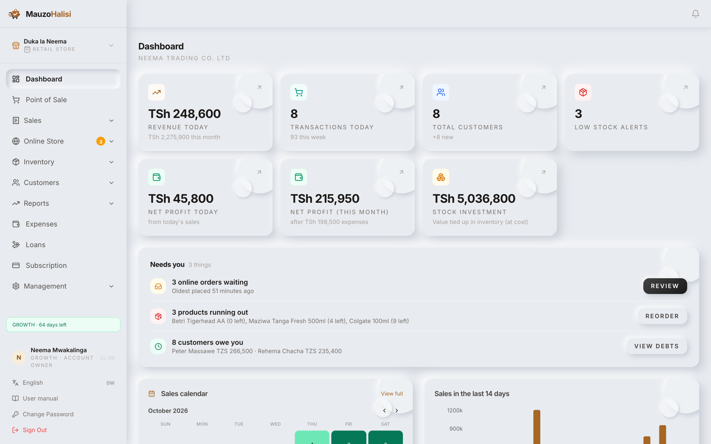
The sales calendar
Kalenda ya mauzo
One square per day of the month, darker green for a stronger day. Hold your finger on a square, or point at it with a mouse, and you get that day in full: Sales, Gross profit, Expenses, Net profit, Receipts, Average sale and Margin.
Mraba mmoja kwa kila siku ya mwezi, kijani kizito kwa siku iliyofanya vizuri zaidi. Shikilia kidole kwenye mraba, au elekeza kipanya, utapata siku nzima: Sales, Gross profit, Expenses, Net profit, Receipts, Average sale na Margin.
- A pale square is a quiet day. Two or three in the same weekday every week is worth asking about.
- Mraba hafifu ni siku tulivu. Mbili au tatu katika siku ile ile ya juma kila wiki inastahili kuulizwa.
- A day can show a loss even with good sales, because a big expense such as rent landed on it.
- Siku inaweza kuonyesha hasara hata ikiwa na mauzo mazuri, kwa sababu matumizi makubwa kama kodi ya pango yameangukia siku hiyo.
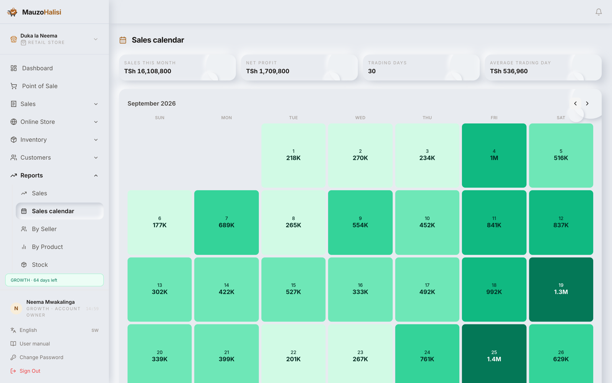
Reports by SMS
Ripoti kwa SMS
The app can send your figures to your phone without you opening anything. Set this up once, under Business reports.
Programu inaweza kutuma takwimu zako kwenye simu bila wewe kufungua chochote. Sanidi mara moja, chini ya Business reports.
-
Turn on the periods you want. Every week and Every month are on by default.
Washa vipindi unavyotaka. Every week na Every month vimewashwa tangu mwanzo.
-
Set Send at to an evening hour, once the day is done.
Weka Send at saa za jioni, baada ya siku kuisha.
-
Press Preview to read the exact message before you commit to it, then Send me a test now to confirm it arrives.
Bonyeza Preview kusoma ujumbe halisi kabla hujakubali, kisha Send me a test now kuthibitisha unafika.
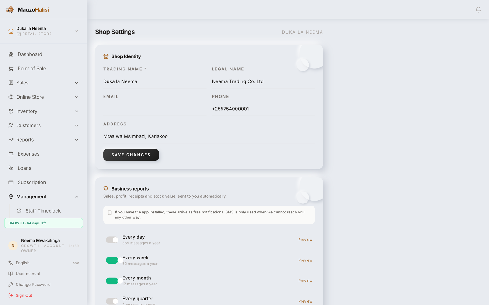
Daily is 365 messages a year; weekly is 52 and tells you most of the same story. If you install the app on your phone, the reports arrive as free notifications instead of SMS. A period with no sales sends nothing at all.
Kila siku ni ujumbe 365 kwa mwaka; kila wiki ni 52 na inakuambia karibu hadithi ile ile. Ukisakinisha programu kwenye simu yako, ripoti zinafika kama arifa za bure badala ya SMS. Kipindi kisicho na mauzo hakitumi chochote.
10
Your kind of business
Aina ya biashara yako
Everything up to here is the same for every shop. This chapter is the part that is not: the business type you chose in section 3 adds its own screen to the sidebar, and only yours appears. Read the one that matches your shop and skip the rest.
Kila kitu hadi hapa ni sawa kwa kila duka. Sura hii ndiyo tofauti: aina ya biashara uliyochagua katika sehemu ya 3 inaongeza skrini yake kwenye utepe wa pembeni, na yako pekee ndiyo inayoonekana. Soma inayolingana na duka lako, ruka zingine.
Pharmacy and chemist
Duka la dawa
In the sidebar: the usual Inventory, with batches and expiry dates behind each item.
Kwenye utepe: Hifadhi ya kawaida, yenye bachi na tarehe za mwisho nyuma ya kila bidhaa.
- Each delivery is received as its own batch, with its own expiry date, so two lots of the same medicine stay separate. Sell the earlier expiry first.
- Kila mzigo unapokelewa kama bachi yake, na tarehe yake ya mwisho, hivyo mizigo miwili ya dawa ile ile inabaki tofauti. Uza inayoisha kwanza.
- A product can be marked Requires Prescription, which keeps the controlled items separate from everything else you sell.
- Bidhaa inaweza kuwekewa alama ya Requires Prescription, jambo linalotenganisha dawa zinazodhibitiwa na vitu vingine unavyouza.
- The Generic Name field means a customer asking for paracetamol finds your Panadol.
- Sehemu ya Generic Name inafanya mteja anayeuliza paracetamol aipate Panadol yako.
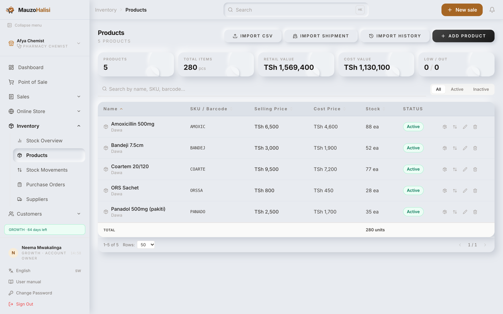
Check expiry dates weekly, not monthly. Stock that expires on your shelf was bought with your money and cannot be sold or returned.
Kagua tarehe za mwisho kila wiki, si kila mwezi. Dawa inayoisha muda rafuni yako ilinunuliwa kwa fedha yako na haiwezi kuuzwa wala kurudishwa.
Restaurant, cafe and bar
Mgahawa, kahawa na baa
In the sidebar: Kitchen Display.
Kwenye utepe: Kitchen Display.
An order taken at the counter appears in the kitchen by itself. Nobody carries a paper chit, and nothing is forgotten because it was never written down.
Agizo lililochukuliwa kaunta linafika jikoni lenyewe. Hakuna anayebeba karatasi, na hakuna kinachosahaulika kwa sababu hakikuandikwa.
-
Take the order at Point of Sale as usual and put the table number on it.
Chukua agizo kwenye Point of Sale kama kawaida na uweke namba ya meza.
-
The ticket appears on Kitchen Display as New Order. The cook presses Start when the pan goes on, so the counter can see it is being made.
Tiketi inatokea kwenye Kitchen Display kama New Order. Mpishi anabonyeza Start anapoanza kupika, ili kaunta ione kinaandaliwa.
-
When the plate is up, Mark Ready. The waiter collects it and the ticket leaves the screen.
Chakula kikiwa tayari, Mark Ready. Mhudumu anakichukua na tiketi inaondoka kwenye skrini.
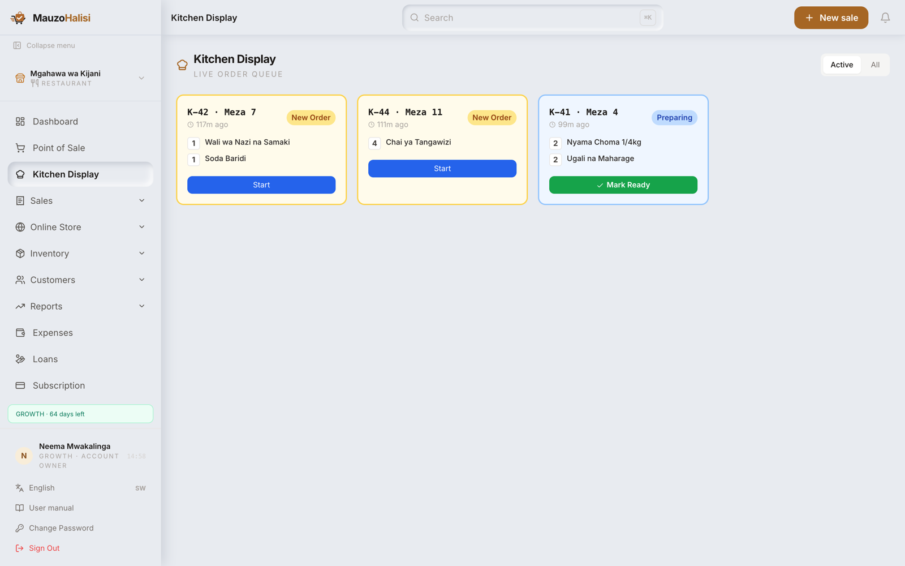
Keep a cheap tablet on the kitchen wall showing this page. It refreshes itself, so nobody has to touch it between orders.
Weka tableti ya bei rahisi ukutani jikoni ikionyesha ukurasa huu. Hujisasisha yenyewe, hivyo hakuna anayehitaji kuugusa kati ya maagizo.
Guest house and hotel
Nyumba ya wageni na hoteli
In the sidebar: Hotel Rooms.
Kwenye utepe: Hotel Rooms.
Every room is a card, and its colour is its state. The four counters across the top answer the only question a receptionist is ever asked on the phone: have you got a room.
Kila chumba ni kadi, na rangi yake ndiyo hali yake. Vihesabu vinne vilivyo juu vinajibu swali pekee mapokezi huulizwa kwa simu: una chumba?
-
Add your rooms once, with Add Room: room number, type and the rate per night.
Ongeza vyumba vyako mara moja, kwa Add Room: namba ya chumba, aina na bei kwa usiku.
-
A guest arriving now: Check In Guest. A guest arriving later: Reserve Room, then Check In Now when they walk in.
Mgeni anayefika sasa: Check In Guest. Mgeni atakayefika baadaye: Reserve Room, kisha Check In Now anapoingia.
-
Food, drinks and laundry go onto the room under Guest Folios, and are paid together at checkout.
Chakula, vinywaji na kufua vinawekwa kwenye chumba chini ya Guest Folios, na hulipwa pamoja wakati wa kuondoka.
-
A room being cleaned or repaired goes to Maintenance, so nobody books it by mistake.
Chumba kinachosafishwa au kurekebishwa kiwekwe Maintenance, ili kisibukiwe kimakosa.
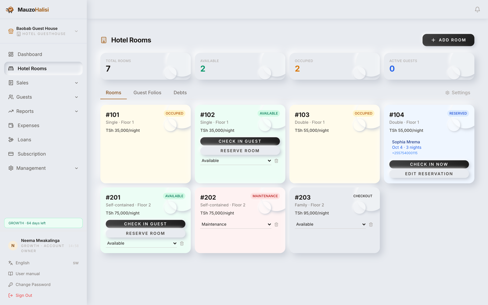
Repair workshop
Karakana ya ukarabati
In the sidebar: Work Orders.
Kwenye utepe: Work Orders.
A repair is not a sale, because it takes days and the price is not known when the customer hands the device over. A work order holds the job until it is.
Ukarabati si mauzo, kwa sababu unachukua siku kadhaa na bei haijulikani mteja anapokabidhi kifaa. Agizo la kazi linashikilia kazi hiyo hadi ijulikane.
-
Press New Work Order and write the device, the fault in the customer's own words, and the serial number.
Bonyeza New Work Order kisha andika kifaa, tatizo kwa maneno ya mteja mwenyewe, na namba ya kifaa.
-
Move it along as the work goes: Open, In Progress, Awaiting Parts, Completed. A customer phoning to ask is answered from this list in one look.
Isogeze kazi inavyoendelea: Open, In Progress, Awaiting Parts, Completed. Mteja anayepiga simu kuuliza anajibiwa kutoka orodha hii kwa mtazamo mmoja.
-
Add the labour hours and the parts used. The total builds itself, so the price you quote is the price the job actually cost.
Ongeza masaa ya kazi na vipuri vilivyotumika. Jumla hujijenga yenyewe, hivyo bei unayotoa ndiyo gharama halisi ya kazi.
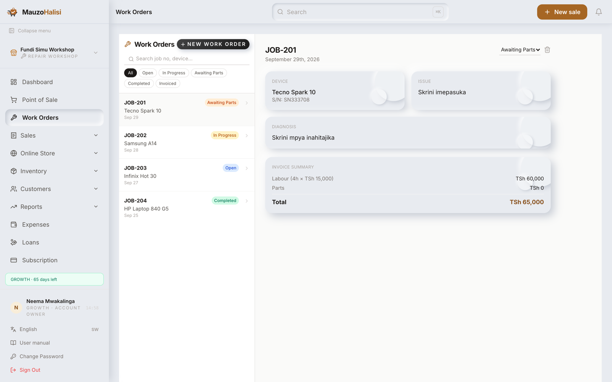
11
Your staff
Wafanyakazi wako
Give every person their own login. Shared logins destroy the only record you have of who did what.
Mpe kila mtu kuingia kwake mwenyewe. Kuingia kwa pamoja kunaharibu kumbukumbu pekee uliyo nayo ya nani alifanya nini.
-
Open Users & Staff and press Add User.
Fungua Users & Staff kisha bonyeza Add User.
-
Enter the Full Name, the email, a Role, and Assign Shop if you have more than one branch.
Ingiza Full Name, barua pepe, Role, na Assign Shop kama una tawi zaidi ya moja.
-
Someone leaves? Use Deactivate, not Delete, so their past sales stay in your records.
Mtu ameondoka? Tumia Deactivate, si Delete, ili mauzo yake ya nyuma yabaki kwenye kumbukumbu zako.
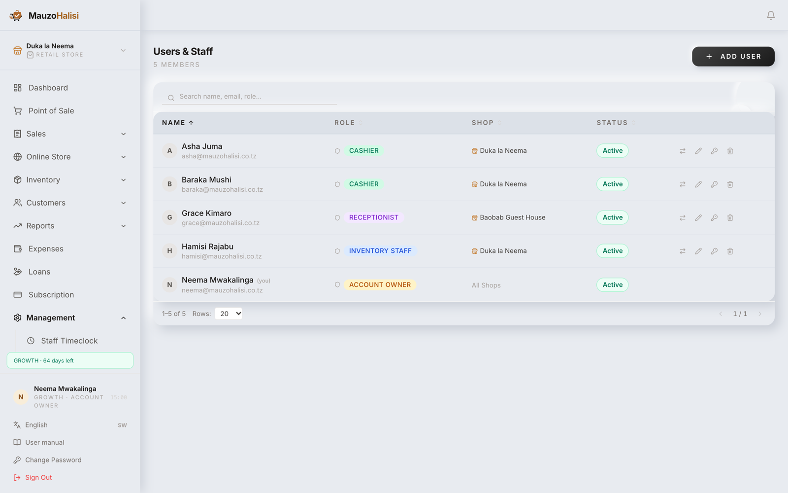
| Role | Wadhifa | Can do | Anaweza |
|---|---|---|---|
| Account Owner | Everything, including money, staff, settings and the subscription. | Kila kitu, pamoja na fedha, wafanyakazi, mipangilio na usajili. | |
| Cashier | Sell, take payment, collect debts, record expenses. | Kuuza, kupokea malipo, kukusanya madeni, kuandika matumizi. | |
| Inventory Staff | Products and stock. Not the till, not the reports. | Bidhaa na hisa. Si kaunta, si ripoti. | |
| Receptionist | Guesthouses only: rooms, check-in and check-out. | Nyumba za wageni pekee: vyumba, kuingia na kutoka. |
12
Paying for your subscription
Kulipia usajili wako
You pay from inside the app, by mobile money. There is no need to call anyone.
Unalipa ukiwa ndani ya programu, kwa mtandao wa simu. Hakuna haja ya kumpigia mtu.
-
Open Subscription and choose a plan and how many months.
Fungua Subscription kisha chagua mpango na idadi ya miezi.
-
Type the Mobile money number you will approve the payment on, then press Pay.
Andika Mobile money number utakayothibitishia malipo, kisha bonyeza Pay.
-
A prompt arrives on that phone. Enter your PIN. On the screen you will see Waiting for your PIN.
Ombi litafika kwenye simu hiyo. Ingiza PIN yako. Kwenye skrini utaona Waiting for your PIN.
-
When it goes through you see a green tick, Payment complete, and the app takes you to your dashboard by itself.
Ikipita utaona alama ya kijani, Payment complete, na programu itakupeleka kwenye dashibodi yenyewe.
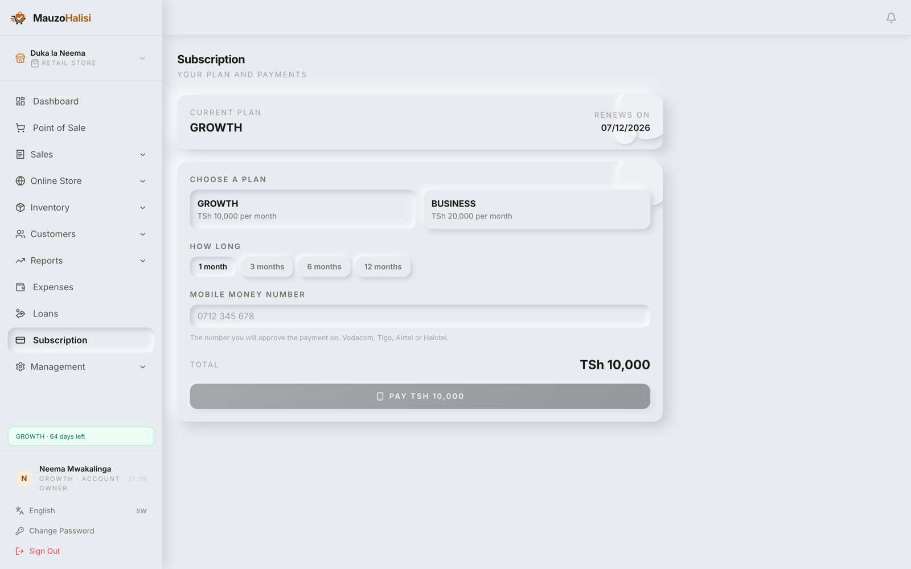
A red X tells you why: not enough balance, cancelled on the phone, the prompt timed out, or the PIN was refused. Fix that one thing and press try again. No money leaves your account on a failed attempt.
Alama nyekundu ya X itakueleza sababu: salio halitoshi, imeghairiwa kwenye simu, muda wa ombi umeisha, au PIN imekataliwa. Rekebisha hilo moja kisha bonyeza jaribu tena. Hakuna fedha inayotoka kwenye akaunti yako jaribio likishindikana.
If your subscription ends, your data is safe and waiting. Sign in, pay on the page you land on, and you are straight back into your shop.
Usajili wako ukiisha, taarifa zako ziko salama zikisubiri. Ingia, lipa kwenye ukurasa utakaofikia, na utarudi dukani kwako papo hapo.
13
When something goes wrong
Kitu kikienda vibaya
The SMS code never arrived Msimbo wa SMS haukufika
Check the number you typed, including the leading digits. Wait a minute, since the network sometimes delays. Then use Send a new code. There is a limit on how many you can request, so if you hit it, wait and try later.
Angalia namba uliyoandika, pamoja na tarakimu za mwanzo. Subiri dakika moja, kwani mtandao wakati mwingine huchelewesha. Kisha tumia Send a new code. Kuna kikomo cha mara unazoweza kuomba, hivyo ukifika kikomo, subiri ujaribu baadaye.
I forgot my password Nimesahau nenosiri langu
On the sign-in page choose Forgot password?, enter your phone number, press Send code, then type the code and choose a new password of at least 8 characters.
Kwenye ukurasa wa kuingia chagua Forgot password?, ingiza namba yako ya simu, bonyeza Send code, kisha andika msimbo na chagua nenosiri jipya lenye angalau herufi 8.
A staff member forgot theirs Mfanyakazi amesahau lake
The owner does not need support for this. Open Users & Staff, find the person, press Reset Password and set a new one.
Mmiliki hahitaji msaada kwa hili. Fungua Users & Staff, mtafute mtu husika, bonyeza Reset Password kisha weka jipya.
A product will not add to the cart Bidhaa haiingii kwenye kikapu
It is almost always Out of stock. Receive the stock under Adjust Stock first. If the product is marked Inactive, press Activate on the products page.
Mara nyingi ni Out of stock. Pokea hisa chini ya Adjust Stock kwanza. Kama bidhaa imewekwa Inactive, bonyeza Activate kwenye ukurasa wa bidhaa.
My profit looks wrong Faida yangu inaonekana si sahihi
Two causes, in this order. First, products with no Cost Price: the app counts the whole selling price as profit. Second, expenses that were never entered. Fix the costs, enter the expenses, and the figure will settle.
Sababu mbili, kwa mpangilio huu. Kwanza, bidhaa zisizo na Cost Price: programu huhesabu bei yote ya kuuza kama faida. Pili, matumizi ambayo hayakuingizwa kamwe. Rekebisha gharama, ingiza matumizi, na kipimo kitatulia.
The receipt will not print Risiti haichapishwi
The receipt opens as a normal print window, so the printer must already be working for the phone or computer you are using. Test it by printing any other page. The sale is already saved either way, and you can print it again later from Transactions.
Risiti hufunguka kama dirisha la kawaida la kuchapisha, hivyo printa lazima iwe tayari inafanya kazi kwenye simu au kompyuta unayotumia. Jaribu kwa kuchapisha ukurasa mwingine wowote. Mauzo yameshahifadhiwa vyovyote vile, na unaweza kuchapisha tena baadaye kutoka Transactions.
It says my account is pending or expired Inasema akaunti yangu inasubiri au imeisha muda
Expired means the subscription ran out: pay on that same page and you are back in, as in section 12. Pending means the account is still being reviewed; the page checks itself every 30 seconds and will move you on by itself.
Imeisha muda maana yake usajili umekwisha: lipa kwenye ukurasa huo huo na utarudi ndani, kama ilivyo sehemu ya 12. Inasubiri maana yake akaunti bado inapitiwa; ukurasa hujikagua kila sekunde 30 na utakusogeza wenyewe.